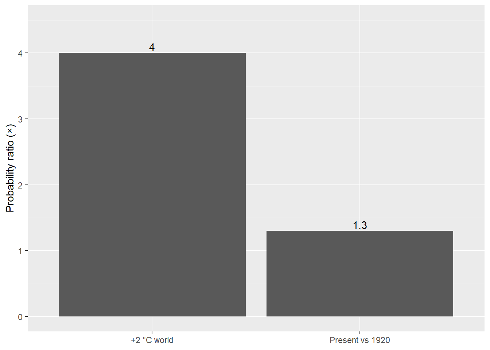

How climate change increased bushfire risk in south-eastern Australia
analysis
Problem description
The 2019/20 “Black Summer” wasn’t just bad luck. It was a glimpse of what warmer conditions make more likely. My guiding question is simple:
Has human-driven climate change already increased the odds of extreme bushfire weather in south-eastern Australia and by how much?
Answering this helps planners, councils and emergency services choose sensible baselines for building codes, land use and preparedness.
Analysis
What I draw on. I summarise published attribution work that compares (i) today’s climate with the early 1900s and (ii) a future +2 °C world. These studies use long observations, ERA5 reanalysis and large climate-model ensembles to estimate probability ratios (PR) for extreme events “how many times more likely is X now than before?” (see References 1–2).
Summary table
| Metric | Present vs early 1900s | +2 °C future |
|---|---|---|
| Fire weather (FWI) risk | ≥ 30% higher | ≥ 4× likely |
| Heat extremes likelihood | ≥ 2× likely | Higher |
In Table 1, extreme FWI conditions are already about 30% more likely today than in the early 1900s, and seasons like 2019/20 become around four times more likely in a +2 °C world.
Summary figure
Findings
Figure 1 shows the step-change clearly: risk is already elevated, and it jumps again under +2 °C.
This links back to Section 1, treating “rare” seasons as the new planning baseline is prudent.
Shift in Risk
Risk has shifted upward. Severe fire-weather seasons should be expected more often, not treated as outliers.
Attribution
Heat is strongly attributed; drought is trickier.
Heat-related extremes have clear signals; drought attribution is less certain, but still points the same way.
Practical Implications
Assume tougher summers and plan for them; earlier warnings, defensible space, and infrastructure that copes under stress.
Conclusion
Answer.
Human-driven warming has already increased the likelihood of extreme bushfire weather in south-eastern Australia, and a +2 °C world implies a multiple-fold increase.
Takeaway.
Plan as if severe seasons are part of the background climate: update land-use rules, tighten building standards, harden critical infrastructure, and resource health and emergency services accordingly.
References
van Oldenborgh, G. J., Krikken, F., Lewis, S., Leach, N. J., Lehner, F., Saunders, K. R., van Weele, M., Haustein, K., Li, S., Wallom, D., Sparrow, S., Arrighi, J., Singh, R. K., van Aalst, M. K., Philip, S. Y., Vautard, R., & Otto, F. E. L. (2021). Attribution of the Australian bushfire risk to anthropogenic climate change. Natural Hazards and Earth System Sciences, 21, 941–960. https://doi.org/10.5194/nhess-21-941-2021
Bureau of Meteorology. (2020). Annual Climate Statement 2019: Australia’s warmest and driest year on record.
https://media.bom.gov.au/releases/739/annual-climate-statement-2019-periods-of-extreme-heat-in-2019-bookend-australias-warmest-and-driest-year-on-record/